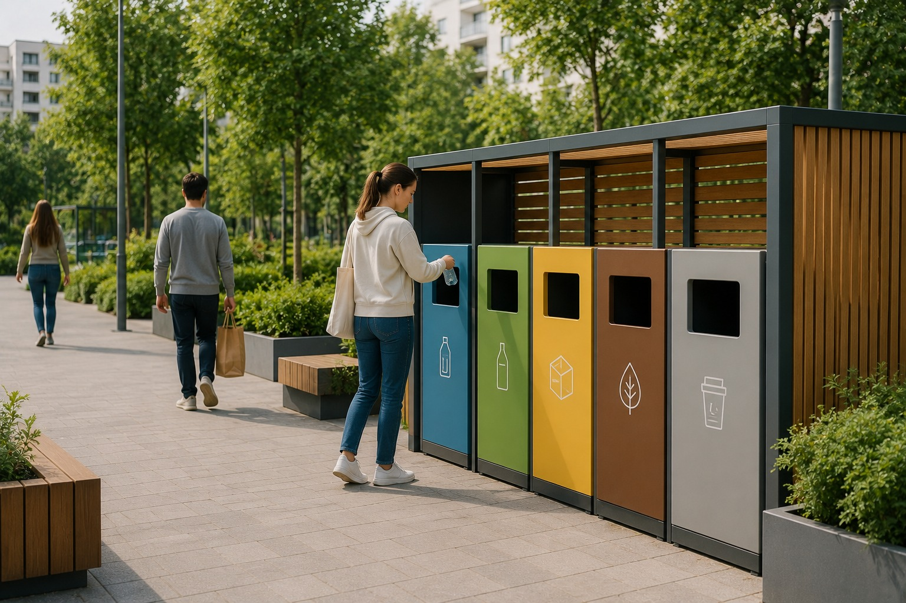
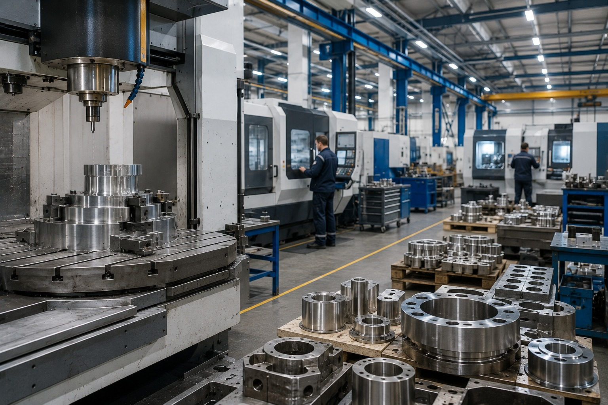

проектов стартовали в 2025 году; структура обновляется
Карта проектов
Карта проектов и региональных примеров
Здесь проекты сгруппированы по смыслу: человек, среда и регионы, экономика, технологии. Карта показывает примеры направлений, а не полный официальный реестр объектов.
добавлен проект по биоэкономике
человек, среда, экономика, технологии
национальных целей
источников в исходном материале
Что здесь можно узнать
Не список ради списка, а карта смысла
Карточки показывают официальное название, понятное название и смысл направления.
Фильтры делят проекты на человека, среду и регионы, экономику и технологии.
Точки на карте помогают понять проявления проектов, но не заменяют официальный реестр.
Как пользоваться картой
Выберите контур или точку
Карта показывает примеры направлений, а не полный официальный реестр объектов. Если точка демонстрационная, она подписана как пример направления, а проверять ее нужно по официальным и региональным источникам.

Официальное и понятное название
Проекты новой архитектуры
Выберите контур выше. Карточки показывают официальное название, понятное объяснение и место проверки. По умолчанию открыт контур «Человек».

Семья
Понятно: поддержка семьи.
Помогает понять: семья, дети, старшее поколение.

Молодёжь и дети
Понятно: образование и самореализация.
Помогает понять: школа, наставничество, молодежные возможности.
Кадры
Понятно: профессии и рынок труда.
Помогает понять: навыки, переобучение, занятость.
Продолжительная и активная жизнь
Понятно: здоровье и долголетие.
Помогает понять: профилактика, активное старшее поколение.
Инфраструктура для жизни
Понятно: жилье, дороги, дворы.
Помогает понять: среду вокруг человека и связность территории.

Экологическое благополучие
Понятно: чистая среда.
Помогает понять: отходы, вода, леса и экологические меры.

Туризм и гостеприимство
Понятно: путешествия по России.
Помогает понять: маршруты, сервисы, региональную экономику.
Эффективная транспортная система
Понятно: транспортные артерии.
Помогает понять: дороги, логистику, доступность территорий.
Эффективная и конкурентная экономика
Понятно: бизнес и производительность.
Помогает понять: рабочие места, инвестиции, рост.
Международная кооперация и экспорт
Понятно: экспорт.
Помогает понять: рынки, логистику, стандарты и производство.
Экономика данных и цифровая трансформация государства
Понятно: экономика данных.
Помогает понять: цифровые сервисы, ИТ-кадры, безопасность.

Новые материалы и химия
Понятно: материалы и химия.
Помогает понять: основу промышленности и медицины.

Средства производства и автоматизации
Понятно: станки.
Помогает понять: оборудование, роботизацию, независимость.
Промышленное обеспечение транспортной мобильности
Понятно: производство транспорта.
Помогает понять: выпуск транспорта и комплектующих.
Беспилотные авиационные системы
Понятно: беспилотники.
Помогает понять: новую отрасль, кадры, регулирование.

Развитие космической деятельности
Понятно: космос.
Помогает понять: связь, навигацию, наблюдение, технологии.
Новые атомные и энергетические технологии
Понятно: новая энергетика.
Помогает понять: энергетический контур технологического суверенитета.

Новые технологии сбережения здоровья
Понятно: технологии здоровья.
Помогает понять: исследования, оборудование, диагностику.
Технологическое обеспечение продовольственной безопасности
Понятно: продовольственные технологии.
Помогает понять: селекцию, агротехнологии, переработку.
Технологическое обеспечение биоэкономики
Понятно: биоэкономика.
Помогает понять: обновление структуры проектов в 2026 году.